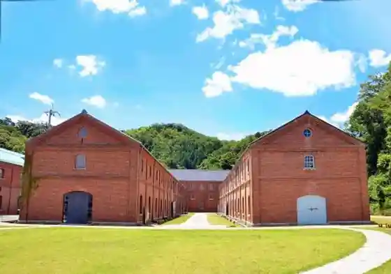

Roadside Station Maizuru Minato Toretore Center
Maizuru, Kyoto · 0773-75-6125 · Official / source link
Maizuru Aka Renga Park
Maizuru, Kyoto · 0773-66-1096 · Official / source link

Kyoto Maizuru Kaki Koya Tsuru Noboru Maru
Maizuru, Kyoto · 0773-68-2303 · Official / source link

Maizuru Tourism Association (Ippan Shadanhojin Kyotofuhokubu Chiiki Renkei Miyako City Ken Shinko Sha Maizuru Chiiki Hombu)
Maizuru, Kyoto · 0773-77-5900 · Official / source link

Kan Shima
Maizuru, Kyoto · 0773-75-8600 · Official / source link

Go Ro Sukaitawa Go Rogagaku Park
Maizuru, Kyoto · 0773-66-2582 · Official / source link
En Takashi Tera
Maizuru, Kyoto · 0773-75-1193 · Official / source link
Maizuru Nishi Maizuru Eki Chushajo
Maizuru, Kyoto · 0773-66-1053 · Official / source link
Eru Maru Maizuru
Maizuru, Kyoto · 0773-68-1090 · Official / source link
Nichi no Ideyu
Maizuru, Kyoto · 0773-75-0366 · Official / source link
Maizuru Oya Umi Park
Maizuru, Kyoto · 0773-66-1020 · Official / source link
Maizuru Kamaboko Tezukuri Taiken Workshop
Maizuru, Kyoto · 0773-77-5400 · Official / source link
Ya Kya Gi Shrine (Omori Shrine)
Maizuru, Kyoto · 0773-62-5462 · Official / source link
Kongo In
Maizuru, Kyoto · 0773-62-1180 · Official / source link
Kaigun Yukari no Minato Meguri Yuransen
Maizuru, Kyoto · 090-5978-8711 · Official / source link
Matsuo Tera
Maizuru, Kyoto · 0773-62-2900 · Official / source link
Maizuru Nanajo Kaigan Chushajo
Maizuru, Kyoto · 0773-66-1053 · Official / source link
Nohara Beach
Maizuru, Kyoto · Official / source link
Kaijojieitai Kaigun Memorial Museum
Maizuru, Kyoto · 0773-62-2250 · Official / source link
Maizuru Ritsu Aka Renga Museum
Maizuru, Kyoto · 0773-66-1095 · Official / source link
Maizuru Higashi Maizuru Eki Chushajo
Maizuru, Kyoto · 0773-66-1053 · Official / source link
Maizuru Hikiage Memorial Museum
Maizuru, Kyoto · 0773-68-0836 · Official / source link
Anju Himezuka
Maizuru, Kyoto · 0773-75-8600 · Official / source link
Maizuru Nature Bunka Sono
Maizuru, Kyoto · 0773-66-1049 · Official / source link
Maizuru Minamida Hen Chushajo
Maizuru, Kyoto · 0773-66-1053 · Official / source link
Maizuru Wan Kaki Koya Bimi Hoshi
Maizuru, Kyoto · 080-6166-1158 · Official / source link
Kyoto Maizuru Minato
Maizuru, Kyoto · Official / source link
Jaku Baths
Maizuru, Kyoto · 0773-75-2541 · Official / source link
Maizuru Park
Maizuru, Kyoto · 0773-76-7211 · Official / source link
Osho Ya Ueno Ie (O Cha to Kashi Togohan Dainingukafe CASA)
Maizuru, Kyoto · 080-9172-7245 · Official / source link
Togo Tei
Maizuru, Kyoto · 0773-62-2250 · Official / source link
Takao Onsen Hikari Baths
Maizuru, Kyoto · 0773-77-1126 · Official / source link
Maizuru Fururu Farm
Maizuru, Kyoto · 0773-60-5111 · Official / source link
Tanabe Shiro Museum
Maizuru, Kyoto · 0773-76-7211 · Official / source link
Tane Tera
Maizuru, Kyoto · 0773-62-1180 · Official / source link
Maizuru Chie Kura
Maizuru, Kyoto · 0773-66-1035 · Official / source link
Maizuru Kanko Suteshon
Maizuru, Kyoto · 0773-75-8600 · Official / source link
Shiroito Hama Shrine
Maizuru, Kyoto · 0773-62-1845 · Official / source link
Kanzaki Beach
Maizuru, Kyoto · 0773-82-5120 · Official / source link
Ikeda Shuzo
Maizuru, Kyoto · 0773-82-0005 · Official / source link
Ora Forest Park
Maizuru, Kyoto · 0773-66-1023 · Official / source link
Maizuru Matsurigoto Memorial Museum
Maizuru, Kyoto · 0773-66-1096 · Official / source link
Ryugu Hama Beach
Maizuru, Kyoto · Official / source link
Asayo Shrine
Maizuru, Kyoto · 0773-75-0132 · Official / source link
Okawa Shrine
Maizuru, Kyoto · 0773-82-0011 · Official / source link
Maizuru Sogo Culture Hall
Maizuru, Kyoto · 0773-64-0880 · Official / source link
Maizuru Local History Museum
Maizuru, Kyoto · 0773-75-8836 · Official / source link
Aobayama Roku Park
Maizuru, Kyoto · 0773-64-5454 · Official / source link